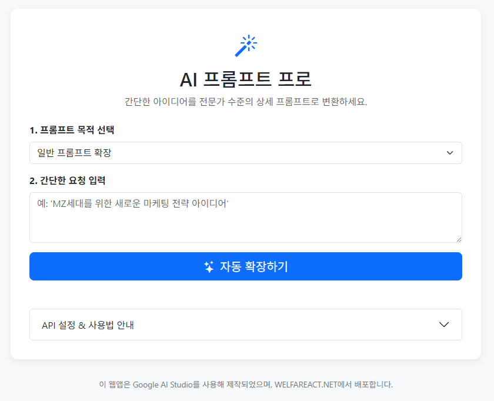

AI Prompt Pro
AI와 대화를 가장 잘하는 방법은 바로 그 방법을 AI에게 직접 물어보는 것입니다. AI Prompt Pro는 사회복지사에게 특화된 프롬프트를 자동으로 생성해주어, 복잡한 명령어나 구조를 몰라도 최적의 결과물을 얻을 수 있도록 돕습니다.
🤖
최적의 프롬프트 생성
간단한 질문만으로도 AI가 이해하기 쉬운 구조화된 프롬프트를 만들어줍니다.
🔍
Deep Research 결합
생성된 프롬프트를 AI의 심층 연구 기능과 결합하면 더욱 정교한 결과물을 얻을 수 있습니다.

프롬프트 생성기 구동 예시